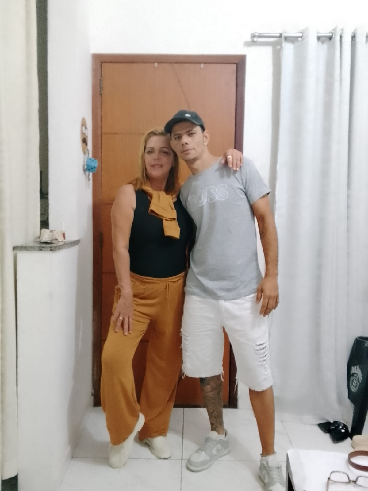
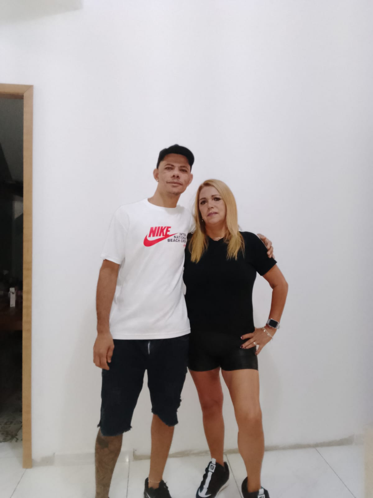

Com todo o meu amor
Uma pequena surpresa feita só para vocês dois.
Abrir nossa históriaE que sejam muitos e muitos mais…


Aperte o botão e leia com o coração
Meu amor, Luciano,
Quando penso em tudo o que vivemos desde aquele abril de 2012, percebo que o tempo passou rápido, mas cada momento ao seu lado ficou guardado pra sempre. Foram anos de risadas, de mãos dadas, de aprender a nos entender e de escolher, todos os dias, continuar essa história juntos.
Você é o meu lugar de paz e a minha maior alegria. Obrigada por cada gesto de carinho, por cada palavra que me acalma e por transformar a vida simples em algo extraordinário só com a sua presença. Com você, até os dias comuns viram lembranças que eu quero reviver pra sempre.
Que a gente continue construindo sonhos lado a lado, somando histórias e amando cada vez mais. Eu te escolho hoje, amanhã e em todos os dias que ainda virão.
Eu te amo, Saira. 💜
Mas cada detalhe foi feito para lembrar o quanto essa história é especial.